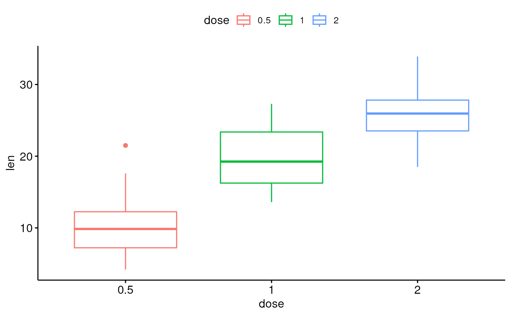
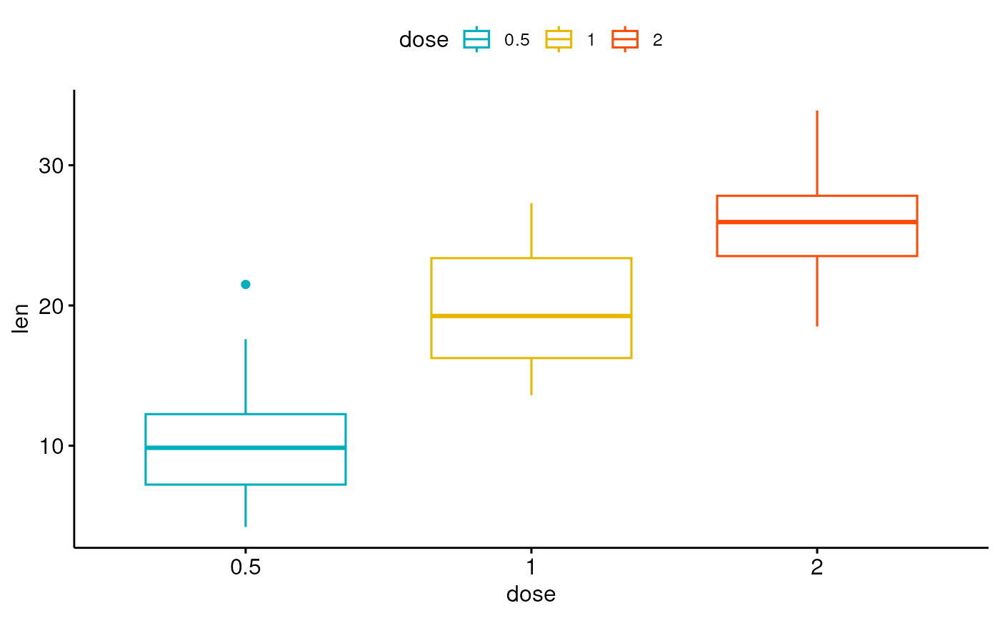
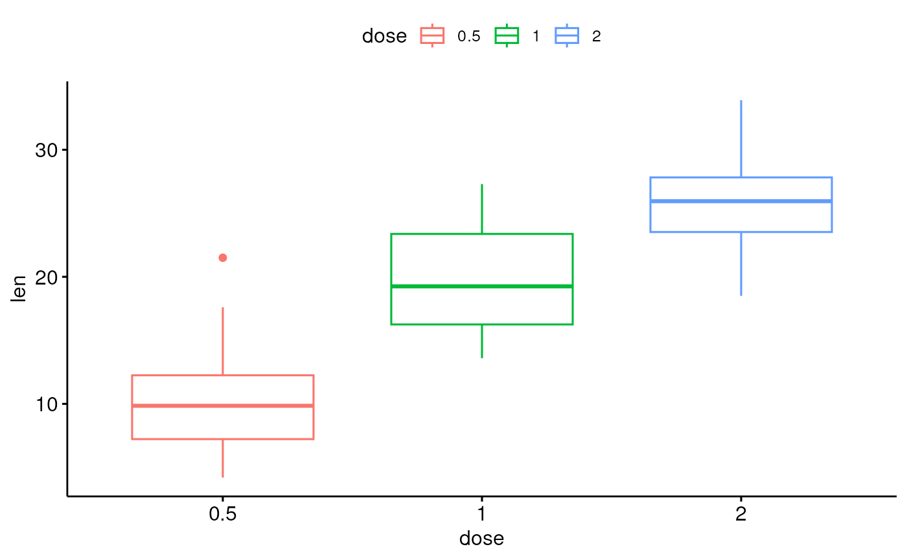
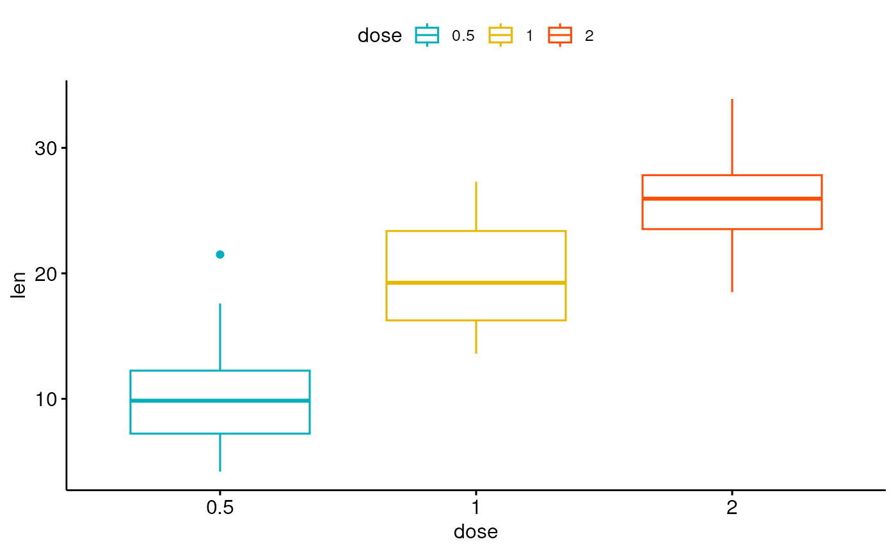
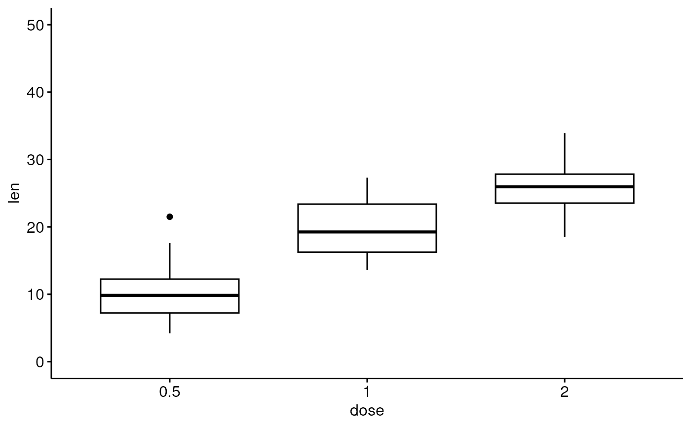
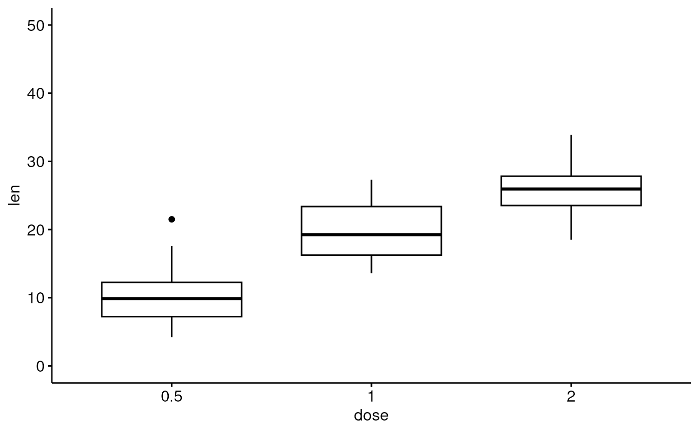

Graphical parameters
ggpar(
p,
palette = NULL,
gradient.cols = NULL,
main = NULL,
submain = NULL,
caption = NULL,
xlab = NULL,
ylab = NULL,
title = NULL,
subtitle = NULL,
font.main = NULL,
font.submain = NULL,
font.x = NULL,
font.y = NULL,
font.caption = NULL,
font.title = NULL,
font.subtitle = NULL,
font.family = "",
xlim = NULL,
ylim = NULL,
xscale = c("none", "log2", "log10", "sqrt"),
yscale = c("none", "log2", "log10", "sqrt"),
format.scale = FALSE,
legend = NULL,
legend.title = NULL,
font.legend = NULL,
ticks = TRUE,
tickslab = TRUE,
font.tickslab = NULL,
font.xtickslab = font.tickslab,
font.ytickslab = font.tickslab,
x.text.angle = NULL,
y.text.angle = NULL,
xtickslab.rt = x.text.angle,
ytickslab.rt = y.text.angle,
xticks.by = NULL,
yticks.by = NULL,
rotate = FALSE,
orientation = c("vertical", "horizontal", "reverse"),
ggtheme = NULL,
...
)Arguments
- p
an object of class ggplot or a list of ggplots
- palette
the color palette to be used for coloring or filling by groups. Allowed values include "grey" for grey color palettes; brewer palettes e.g. "RdBu", "Blues", ...; or custom color palette e.g. c("blue", "red"); and scientific journal palettes from ggsci R package, e.g.: "npg", "aaas", "lancet", "jco", "ucscgb", "uchicago", "simpsons" and "rickandmorty". Can be also a numeric vector of length(groups); in this case a basic color palette is created using the function palette.
- gradient.cols
vector of colors to use for n-colour gradient. Allowed values include brewer and ggsci color palettes.
- main
plot main title.
- submain, subtitle
plot subtitle.
- caption
plot caption.
- xlab
character vector specifying x axis labels. Use xlab = FALSE to hide xlab.
- ylab
character vector specifying y axis labels. Use ylab = FALSE to hide ylab.
- title
plot main title.
- font.main, font.submain, font.caption, font.x, font.y
a vector of length 3 indicating respectively the size (e.g.: 14), the style (e.g.: "plain", "bold", "italic", "bold.italic") and the color (e.g.: "red") of main title, subtitle, caption, xlab and ylab, respectively. For example font.x = c(14, "bold", "red"). Use font.x = 14, to change only font size; or use font.x = "bold", to change only font face.
- font.title, font.subtitle
alias of font.submain and font.submain, respectively.
- font.family
character vector specifying font family.
- xlim, ylim
a numeric vector of length 2, specifying x and y axis limits (minimum and maximum), respectively. e.g.: ylim = c(0, 50).
- xscale, yscale
x and y axis scale, respectively. Allowed values are one of c("none", "log2", "log10", "sqrt"); e.g.: yscale="log2".
- format.scale
logical value. If TRUE, axis tick mark labels will be formatted when xscale or yscale = "log2" or "log10".
- legend
character specifying legend position. Allowed values are one of c("top", "bottom", "left", "right", "none"). To remove the legend use legend = "none". Legend position can be also specified using a numeric vector c(x, y); see details section.
- legend.title
legend title, e.g.:
legend.title = "Species". Can be also a list,legend.title = list(color = "Species", linetype = "Species", shape = "Species").- font.legend
legend text font style; e.g.: font.legend = c(10, "plain", "black").
- ticks
logical value. Default is TRUE. If FALSE, hide axis tick marks.
- tickslab
logical value. Default is TRUE. If FALSE, hide axis tick labels.
- font.tickslab, font.xtickslab, font.ytickslab
Font style (size, face, color) for tick labels, e.g.: c(14, "bold", "red").
- x.text.angle, y.text.angle
Numeric value specifying the rotation angle of x and y axis tick labels, respectively. Default value is NULL. For vertical x axis texts use x.text.angle = 90.
- xtickslab.rt, ytickslab.rt
Same as x.text.angle and y.text.angle, respectively. Will be deprecated in the near future.
- xticks.by, yticks.by
numeric value controlling x and y axis breaks, respectively. For example, if yticks.by = 5, a tick mark is shown on every 5. Default value is NULL.
- rotate
logical value. If TRUE, rotate the graph by setting the plot orientation to horizontal.
- orientation
change the orientation of the plot. Allowed values are one of c( "vertical", "horizontal", "reverse"). Partial match is allowed.
- ggtheme
function, ggplot2 theme name. Default value is theme_pubr(). Allowed values include ggplot2 official themes: theme_gray(), theme_bw(), theme_minimal(), theme_classic(), theme_void(), ....
- ...
not used
Examples
# Load data
data("ToothGrowth")
df <- ToothGrowth
# Basic box plot
# +++++++++++++++++++++++++++
p <- ggboxplot(df, x = "dose", y = "len")
# Change the plot orientation: horizontal
ggpar(p, orientation = "horiz")
 # Change main title and axis labels
# ++++++++++++++++++++++++++++
ggpar(p,
main = "Plot of length \n by dose",
xlab = "Dose (mg)", ylab = "Length")
# Change main title and axis labels
# ++++++++++++++++++++++++++++
ggpar(p,
main = "Plot of length \n by dose",
xlab = "Dose (mg)", ylab = "Length")
 # Title font styles: 'plain', 'italic', 'bold', 'bold.italic'
ggpar(p,
main = "Length by dose",
font.main = c(14,"bold.italic", "red"),
font.x = c(14, "bold", "#2E9FDF"),
font.y = c(14, "bold", "#E7B800"))
# Title font styles: 'plain', 'italic', 'bold', 'bold.italic'
ggpar(p,
main = "Length by dose",
font.main = c(14,"bold.italic", "red"),
font.x = c(14, "bold", "#2E9FDF"),
font.y = c(14, "bold", "#E7B800"))
 # Hide axis labels
ggpar(p, xlab = FALSE, ylab = FALSE)
# Hide axis labels
ggpar(p, xlab = FALSE, ylab = FALSE)
 # Change colors
# ++++++++++++++++++++++
# Change outline colors by groups: dose
p2 <- ggboxplot(df, "dose", "len", color = "dose")
p2

# Use custom color palette
ggpar(p2, palette = c("#00AFBB", "#E7B800", "#FC4E07"))

# Use brewer palette
ggpar(p2, palette = "Dark2" )
# Change colors
# ++++++++++++++++++++++
# Change outline colors by groups: dose
p2 <- ggboxplot(df, "dose", "len", color = "dose")
p2

# Use custom color palette
ggpar(p2, palette = c("#00AFBB", "#E7B800", "#FC4E07"))

# Use brewer palette
ggpar(p2, palette = "Dark2" )
 # Use grey palette
ggpar(p2, palette = "grey")
# Use grey palette
ggpar(p2, palette = "grey")
 # Use scientific journal palette from ggsci package
ggpar(p2, palette = "npg") # nature
# Use scientific journal palette from ggsci package
ggpar(p2, palette = "npg") # nature
 # Axis ticks, limits, scales
# +++++++++++++++++++++++++
# Axis ticks labels and rotation
ggpar(p,
font.tickslab = c(14,"bold", "#993333"),
xtickslab.rt = 45, ytickslab.rt = 45)
# Axis ticks, limits, scales
# +++++++++++++++++++++++++
# Axis ticks labels and rotation
ggpar(p,
font.tickslab = c(14,"bold", "#993333"),
xtickslab.rt = 45, ytickslab.rt = 45)
 # Hide axis ticks and tick labels
ggpar(p, ticks = FALSE, tickslab = FALSE)
# Hide axis ticks and tick labels
ggpar(p, ticks = FALSE, tickslab = FALSE)
 # Axis limits
ggpar(p, ylim = c(0, 50))

# Axis scale
ggpar(p, yscale = "log2")
# Axis limits
ggpar(p, ylim = c(0, 50))

# Axis scale
ggpar(p, yscale = "log2")
 # Format axis scale
ggpar(p, yscale = "log2", format.scale = TRUE)
# Format axis scale
ggpar(p, yscale = "log2", format.scale = TRUE)
 # Legends
# ++++++++++++++++++
# Change legend position and title
ggpar(p2,
legend = "right", legend.title = "Dose (mg)",
font.legend = c(10, "bold", "red"))
#> Warning: Ignoring unknown labels:
#> • fill : "Dose (mg)"
#> • linetype : "Dose (mg)"
#> • shape : "Dose (mg)"
# Legends
# ++++++++++++++++++
# Change legend position and title
ggpar(p2,
legend = "right", legend.title = "Dose (mg)",
font.legend = c(10, "bold", "red"))
#> Warning: Ignoring unknown labels:
#> • fill : "Dose (mg)"
#> • linetype : "Dose (mg)"
#> • shape : "Dose (mg)"